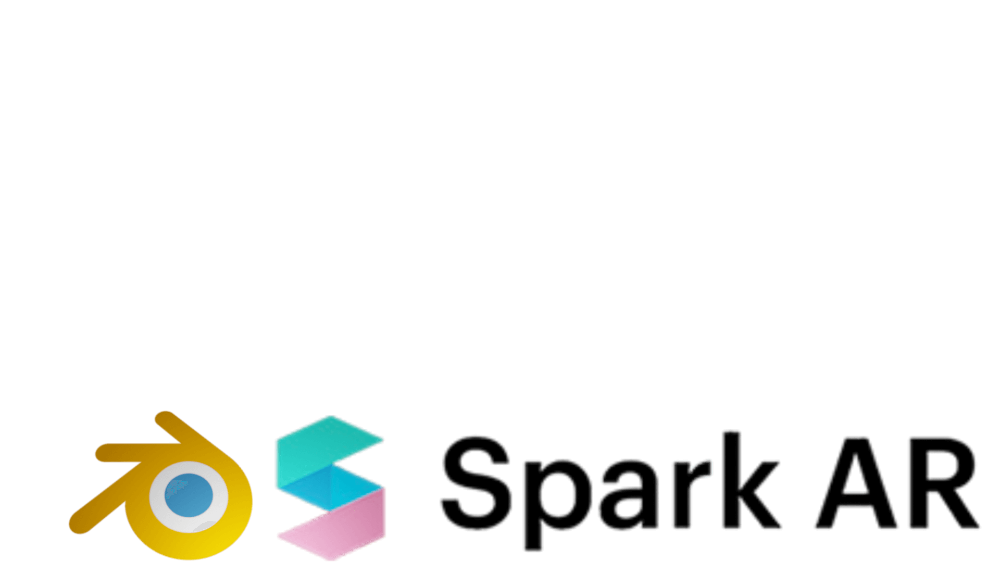

3D MODELS
Jako doświadczony grafik 3D, zaprojektowałem liczne modele 3D dla gier wideo, projekty samochodów oraz modele do rzeczywistości rozszerzonej(AR). Moja pasja do modelowania i projektowania 3D jest widoczna w każdym projekcie. Moje umiejętności obejmują tworzenie modeli 3D i przekształcanie ich w filtry AR na Instagramie lub innych platformach społecznościowych. Współpracowałem z małymi firmami, aby stworzyć unikalne i angażujące filtry, które wzmacniają tożsamość ich marki i pomagają wyróżnić się na zatłoczonym rynku. Do tworzenia moich projektów 3D używam różnorodnych narzędzi, w tym Blendera i Spark AR. Zawsze chętnie uczę się nowych technik i eksploruję nowe oprogramowania, aby poszerzać moje umiejętności i zachować świeżość i innowacyjność mojej pracy.
As an experienced 3D modeler, I have designed numerous 3D assets for video games, stunning car 3D designs, and augmented reality models. My passion for 3D modeling and design is evident in every project I undertake, and I take pride in delivering high-quality work that exceeds client expectations. My expertise extends to creating 3D models and transforming them into Instagram or other social media AR filters. I have worked with small companies to create unique and engaging filters that enhance their brand identity and help them stand out in a crowded market. I use a variety of tools and software to create my 3D designs, including Blender and Spark AR. I am always eager to learn new techniques and explore new software to expand my skills and keep my work fresh and innovative.
733743446
szymonglowacki321@gmail.com